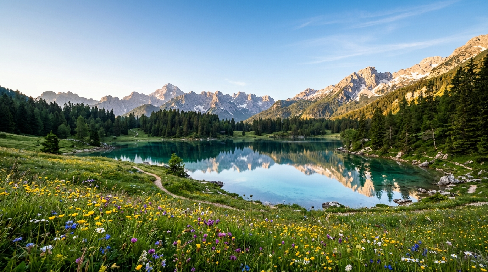
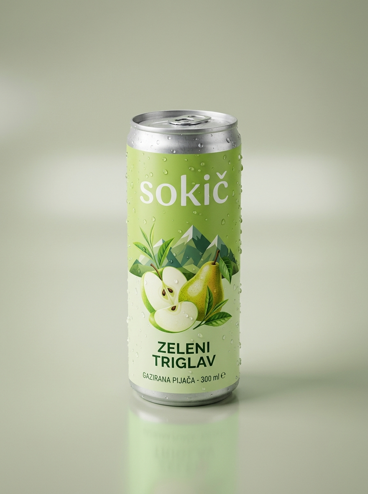
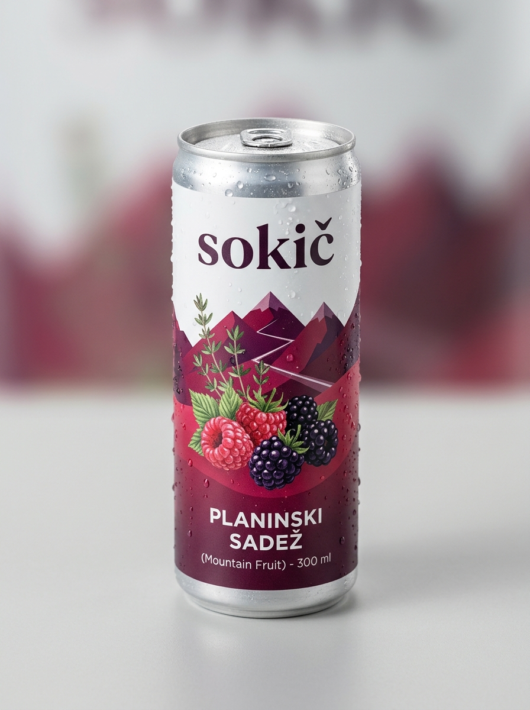
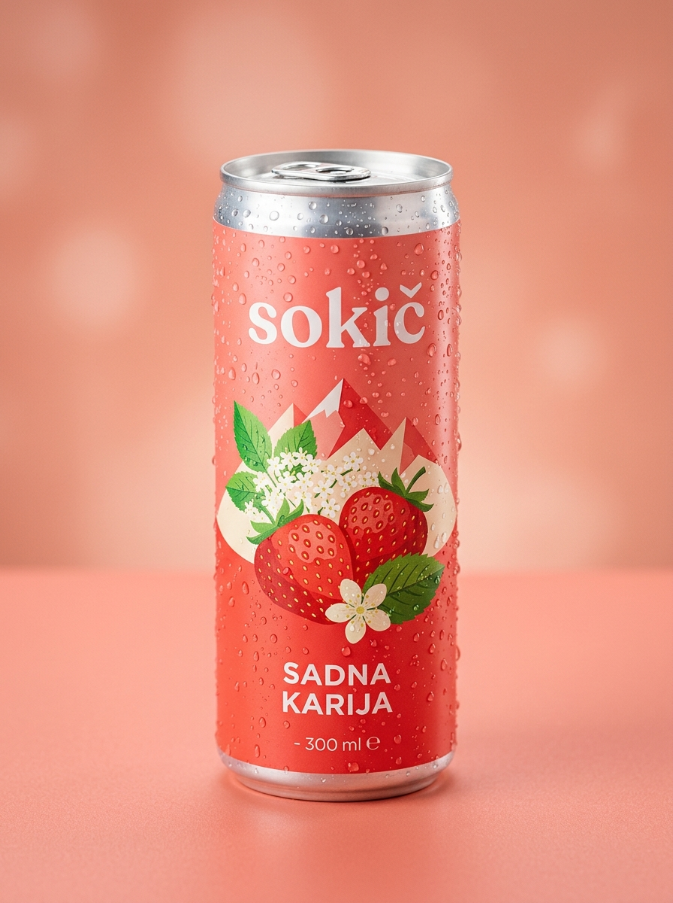

Prva slovenska gazirana energijska pijača (300 ml), narejena iz pravega sadnega pireja, hladno varjenega zelenega čaja in gorskih zelišč. Brez umetnih sladil, brez kemičnih konzervansov in brez nenadnega padca energije.

Ustvarjeno z mislijo na aktivne ljudi, študente in ljubitelje narave.
Brez umetnih barvil, sintetičnih arom in kemičnih konzervansov. Narejeno iz pravega sadnega pireja in čiste gorske vode.
B vitamini in naravni L-teanin iz hladno varjenega zelenega čaja zagotavljata miren, zbran fokus brez tresenja ali srčnega razbijanja.
Brez umetnih sladil (0g aspartama in sukraloze) in brez belega rafiniranega sladkorja. Primerno za športnike in aktivne posameznike.
Navdihnjeni z naravo, našimi gorami, gozdovi in bogato tradicijo domačih sadovnjakov ter gorskih zelišč.
Vsaka 300ml pločevinka ponuja popolno harmonijo pristnega slovenskega sadja, zelenega čaja in osvežujočih mehurčkov.
Navdihnjen z gorenjskimi sadovnjaki in svežim alpskim zrakom. Harmonija sočne hruške in gorenjskega jabolka z nežno grenčico zelenega čaja.

Bogat, poln okus gozdnih malin in robid s hladilnim pridihom domače mete in kančkom aromatičnega divjega timijana za naravno odpornost.

Sladke, na soncu dozorele domače jagode v elegantni kombinaciji z dišečim cvetočim bezgom, svežim listom mete in blagodejnim zelenim čajem.
Za razliko od klasičnih energijskih pijač, polnih umetnega tavrina, sintetičnega kofeina in belega sladkorja, smo v Sokiču ubrali popolnoma naravno pot. Združili smo slovensko sadje in zelišča.
90 ml pravega zelenega čaja zagotavlja naraven kofein (96 mg na pločevinko) in L-teanin za enakomerno budnost brez živčnosti.
Nič umetnih arom sadja. Uporabljamo pravi hruškin pire, malinov pire, jagode in gorenjski jabolčni sok.
Domača gorska meta, alpski timijan in cvetoči bezeg dajejo pijači prijetno naravno svežino, ki odžeja in poživi.
Nežno gazirana z naravno gorsko vodo za popolno svežino ob vsakem požirku.
| Lastnost | Sokič (300 ml) | Klasična pijača |
|---|---|---|
| Vir kofeina | Hladno varjen zeleni čaj | Sintetični kofein v prahu |
| Profil energije | Mirna, enakomerna 4–5 ur | Hiter dvig + padec po 45 min |
| Sladkor | Samo sadni sladkor (5,8g) | 27g – 32g belega sladkorja |
| Umetna sladila | 0 % (Brez aspartama) | Pogosto sukraloza ali acesulfam |
| Sadni delež | Pravi sadni pire in sok | 0 % (sintetične arome) |
| Izvor recepture | 🇸🇮 Slovenski projekt | Globalna tovarniška formula |
Sokič je nastal kot projekt ustvarjanja boljše pijače. Tukaj so točne hranilne vrednosti in stroškovna struktura.
Povprečne vrednosti za 300 ml pločevinko (Zeleni Triglav):
| Energijska vrednost | 295 kJ / 70 kcal |
| Maščobe | 0,0 g |
| - od tega nasičene maščobe | 0,0 g |
| Ogljikovi hidrati | 16,8 g |
| - od tega naravni sadni sladkorji | 15,6 g |
| Beljakovine | 0,2 g |
| Sol | < 0,02 g |
| Naravni kofein (zeleni čaj) | 96 mg (32 mg / 100 ml) |
| L-teanin (aminokislina za zbranost) | 50 mg |
| Vitamin B6 in B12 | 100% PDV / RDA |
Izračun neposrednih stroškov pridelave na enoto prototipa:
💡 Z maloprodajno ceno 4,00 € zagotavljamo pošteno plačilo pridelovalcem sadja, uporabo najkakovostnejših naravnih sestavin in trajnostno aluminijasto embalažo brez plastike.
"Neverjetna razlika v primerjavi s klasičnimi energijskimi pijačami! Popil sem Zeleni Triglav pred treningom in energija je trajala celo popoldne brez kakršnegakoli tresenja rok ali nenadnega padca. Okus hruške in zelenega čaja je top!"
"Za učenje med izpitnim obdobjem sem prej pila kavo in Red Bull, potem pa imela težave s spanjem. Sokič Sadna Karija z bezgom in jagodo je osvežilen, L-teanin pa res deluje – glava je bistra in mirna. Naročam že tretji paket!"
"Planinski Sadež je perfekten sopotnik za v nahrbtnik na hribe. Okus gozdnih malin z noto timijana je neverjetno naraven, kot bi jedel sveže nabrane gozdne sadeže ob gorski stezi. 4 eure za takšno kakovost je več kot poštena cena."